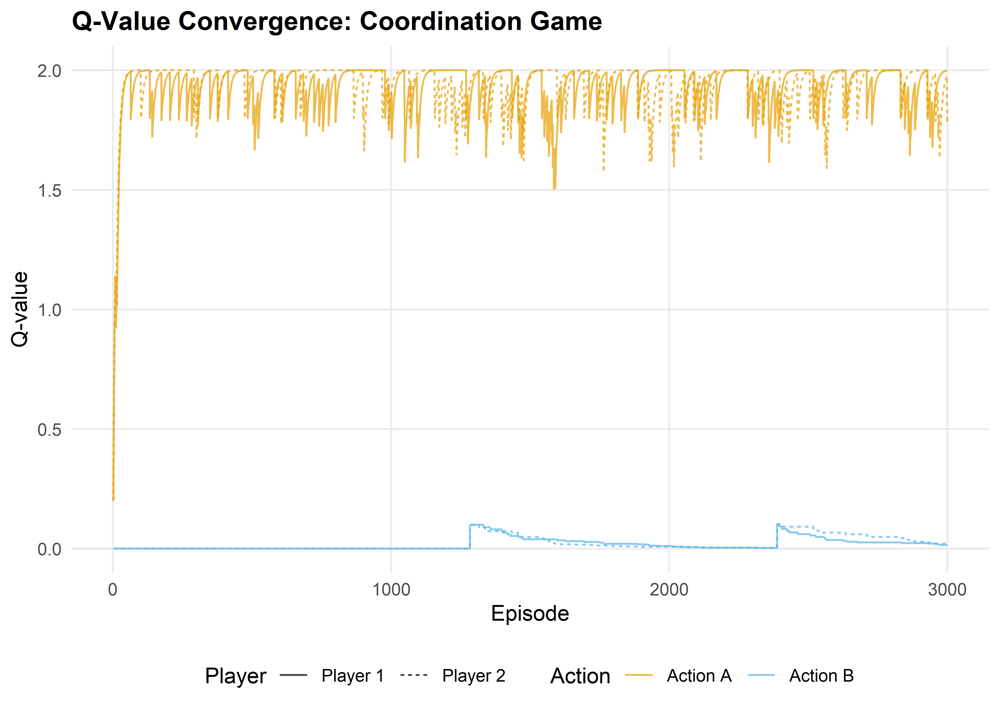
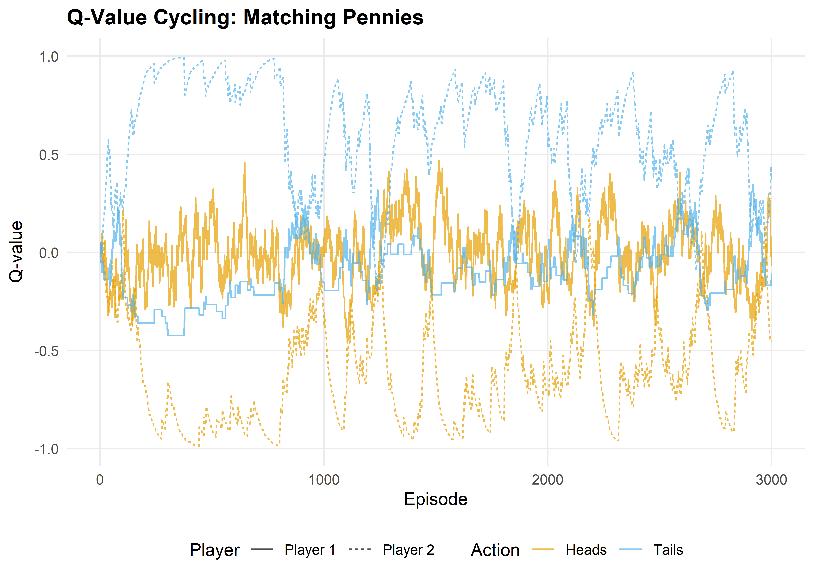

q_agent_create <- function(n_actions, alpha = 0.1, epsilon = 0.1) {
Q <- rep(0, n_actions)
list(
choose = function() {
if (runif(1) < epsilon) {
sample(n_actions, 1)
} else {
ties <- which(Q == max(Q))
sample(ties, 1)
}
},
update = function(action, reward) {
Q[action] <<- Q[action] + alpha * (reward - Q[action])
},
get_Q = function() Q
)
}27 Q-Learning in 2-Player Games
Abstract
Tabular Q-learning in matrix games: convergence in coordination games, divergence in zero-sum games, and the rational learning debate.
Keywords
Q-learning, matrix games, convergence, multi-agent, rational learning
28 Q-Learning in Games
Learning objectives
- Explain how single-agent Q-learning extends to multi-agent matrix games.
- Implement independent Q-learners for repeated 2-player games in R.
- Demonstrate convergence to Nash equilibrium in coordination games and cycling in zero-sum games.
- Discuss the “rational learning” debate and the limits of independent learning.
28.1 Motivation
Reinforcement learning has achieved remarkable success in single-agent settings: an agent interacts with an environment, receives rewards, and learns a policy that maximizes long-term return. But what happens when the “environment” is another learning agent?
In a matrix game played repeatedly, two Q-learners each try to maximize their own payoff. The environment each agent faces is non-stationary — it changes as the other agent updates its policy. This creates a fundamental tension: the convergence guarantees of Q-learning (Chapter 27) rely on a stationary environment, and that assumption breaks in multi-agent settings.
Whether independent Q-learners converge to Nash equilibrium, cycle, or diverge depends on the game’s structure. This chapter explores all three outcomes through simulation.
28.2 Theory
28.2.1 Q-learning recap
In single-agent Q-learning (Sutton & Barto, 2018, 6), an agent maintains a value estimate \(Q(s, a)\) for each state-action pair and updates it after observing a reward \(r\) and next state \(s'\):
\[ Q(s, a) \leftarrow Q(s, a) + \alpha \left[ r + \gamma \max_{a'} Q(s', a') - Q(s, a) \right] \tag{28.1}\]
For repeated matrix games, there is only one “state” (the game itself), so Q-values reduce to action values \(Q(a_i)\) for each of player \(i\)’s actions. The discount factor \(\gamma\) is irrelevant in a stateless setting, and the update simplifies to:
\[ Q_i(a_i) \leftarrow Q_i(a_i) + \alpha \left[ r_i - Q_i(a_i) \right] \tag{28.2}\]
where \(r_i\) is the payoff player \(i\) received from playing action \(a_i\) against the opponent’s (unknown) action.
28.2.2 Independent learners
The simplest multi-agent approach is independent Q-learning: each agent runs its own Q-learning algorithm, treating the other agent as part of the environment. No agent models or observes the other’s Q-values.
The action selection typically uses an \(\varepsilon\)-greedy policy: with probability \(\varepsilon\) the agent explores (chooses a random action), and with probability \(1 - \varepsilon\) it exploits (chooses the action with the highest Q-value).
28.2.3 Convergence properties
The behavior of independent Q-learners depends critically on the game:
- Coordination games (e.g., Battle of the Sexes): learners tend to converge to one of the pure-strategy Nash equilibria. Which one depends on initial conditions and exploration noise.
- Zero-sum games (e.g., Matching Pennies): learners typically cycle rather than converge. Each agent’s best response shifts the opponent’s optimal play, creating a feedback loop.
- The Prisoner’s Dilemma: learners converge to mutual defection — the unique Nash equilibrium — even though mutual cooperation yields higher payoffs.
Shoham and Leyton-Brown (2009) discuss the “rational learning” debate: under what conditions can independent learners reach equilibrium, and when should we expect them to fail?
28.3 Implementation in R
28.3.1 Q-learning agent
28.3.2 Running a repeated game
run_q_learning_game <- function(A, B, episodes = 5000,
alpha = 0.1, epsilon = 0.1) {
n1 <- nrow(A)
n2 <- ncol(A)
agent1 <- q_agent_create(n1, alpha, epsilon)
agent2 <- q_agent_create(n2, alpha, epsilon)
history <- tibble(
episode = integer(),
a1 = integer(), a2 = integer(),
r1 = double(), r2 = double(),
Q1_1 = double(), Q1_2 = double(),
Q2_1 = double(), Q2_2 = double()
)
for (ep in seq_len(episodes)) {
a1 <- agent1$choose()
a2 <- agent2$choose()
r1 <- A[a1, a2]
r2 <- B[a1, a2]
agent1$update(a1, r1)
agent2$update(a2, r2)
Q1 <- agent1$get_Q()
Q2 <- agent2$get_Q()
history <- bind_rows(history, tibble(
episode = ep, a1 = a1, a2 = a2, r1 = r1, r2 = r2,
Q1_1 = Q1[1], Q1_2 = Q1[2],
Q2_1 = Q2[1], Q2_2 = Q2[2]
))
}
history
}28.3.3 Coordination game: convergence
A_coord <- matrix(c(2, 0, 0, 1), nrow = 2, byrow = TRUE,
dimnames = list(c("A", "B"), c("A", "B")))
B_coord <- A_coord
set.seed(42)
hist_coord <- run_q_learning_game(A_coord, B_coord,
episodes = 3000, alpha = 0.1, epsilon = 0.05)q_long <- hist_coord |>
select(episode, Q1_1, Q1_2, Q2_1, Q2_2) |>
pivot_longer(-episode, names_to = "variable", values_to = "Q") |>
mutate(
player = if_else(str_starts(variable, "Q1"), "Player 1", "Player 2"),
action = if_else(str_ends(variable, "_1"), "Action A", "Action B")
)
p_conv <- ggplot(q_long, aes(x = episode, y = Q, colour = action, linetype = player)) +
geom_line(alpha = 0.7) +
scale_colour_manual(values = c("Action A" = okabe_ito[1],
"Action B" = okabe_ito[2])) +
theme_publication() +
labs(title = "Q-Value Convergence: Coordination Game",
x = "Episode", y = "Q-value",
colour = "Action", linetype = "Player")
p_conv
save_pub_fig(p_conv, "q-convergence-coordination", width = 7, height = 5)
28.3.4 Zero-sum game: cycling
# Matching Pennies
A_mp <- matrix(c(1, -1, -1, 1), nrow = 2, byrow = TRUE,
dimnames = list(c("H", "T"), c("H", "T")))
B_mp <- -A_mp
set.seed(42)
hist_mp <- run_q_learning_game(A_mp, B_mp,
episodes = 3000, alpha = 0.05, epsilon = 0.1)q_long_mp <- hist_mp |>
select(episode, Q1_1, Q1_2, Q2_1, Q2_2) |>
pivot_longer(-episode, names_to = "variable", values_to = "Q") |>
mutate(
player = if_else(str_starts(variable, "Q1"), "Player 1", "Player 2"),
action = if_else(str_ends(variable, "_1"), "Heads", "Tails")
)
p_cycle <- ggplot(q_long_mp, aes(x = episode, y = Q, colour = action, linetype = player)) +
geom_line(alpha = 0.7) +
scale_colour_manual(values = c("Heads" = okabe_ito[1],
"Tails" = okabe_ito[2])) +
theme_publication() +
labs(title = "Q-Value Cycling: Matching Pennies",
x = "Episode", y = "Q-value",
colour = "Action", linetype = "Player")
p_cycle
save_pub_fig(p_cycle, "q-cycling-matching-pennies", width = 7, height = 5)
28.4 Worked example
Let us trace the first 20 episodes of the coordination game in detail:
trace <- hist_coord |>
filter(episode <= 20) |>
mutate(
a1_label = if_else(a1 == 1, "A", "B"),
a2_label = if_else(a2 == 1, "A", "B"),
coordinated = a1 == a2
)
cat("First 20 episodes of coordination game Q-learning:\n\n")#> First 20 episodes of coordination game Q-learning:trace |>
select(episode, a1_label, a2_label, r1, r2, coordinated) |>
rename(P1 = a1_label, P2 = a2_label, `P1 payoff` = r1,
`P2 payoff` = r2, Coordinated = coordinated) |>
print(n = 20)#> # A tibble: 20 × 6
#> episode P1 P2 `P1 payoff` `P2 payoff` Coordinated
#> <int> <chr> <chr> <dbl> <dbl> <lgl>
#> 1 1 A A 2 2 TRUE
#> 2 2 A A 2 2 TRUE
#> 3 3 A A 2 2 TRUE
#> 4 4 A A 2 2 TRUE
#> 5 5 A A 2 2 TRUE
#> 6 6 A A 2 2 TRUE
#> 7 7 A A 2 2 TRUE
#> 8 8 A A 2 2 TRUE
#> 9 9 A B 0 0 FALSE
#> 10 10 B A 0 0 FALSE
#> 11 11 A B 0 0 FALSE
#> 12 12 A A 2 2 TRUE
#> 13 13 A A 2 2 TRUE
#> 14 14 A B 0 0 FALSE
#> 15 15 A A 2 2 TRUE
#> 16 16 A A 2 2 TRUE
#> 17 17 A A 2 2 TRUE
#> 18 18 A A 2 2 TRUE
#> 19 19 A A 2 2 TRUE
#> 20 20 A A 2 2 TRUEcat(sprintf("\nCoordination rate (first 20): %.0f%%\n",
100 * mean(trace$coordinated)))#>
#> Coordination rate (first 20): 80%cat(sprintf("Coordination rate (last 500): %.0f%%\n",
100 * mean((hist_coord |> filter(episode > 2500))$a1 ==
(hist_coord |> filter(episode > 2500))$a2)))#> Coordination rate (last 500): 94%Early episodes show exploration: agents try both actions and sometimes miscoordinate. As Q-values diverge (one action becomes clearly better), the \(\varepsilon\)-greedy policy increasingly selects the high-Q action, and coordination improves. By the final 500 episodes, coordination is near-perfect.
In Matching Pennies, by contrast, no such convergence occurs — the Q-values never stabilize because each agent’s adaptation continually shifts the landscape the other agent faces.
28.5 Extensions
- Decaying exploration: Using \(\varepsilon_t = \varepsilon_0 / t\) guarantees convergence in stationary environments but can lock in suboptimal play in non-stationary multi-agent settings.
- Win-or-Learn-Fast (WoLF): Varies the learning rate based on whether the agent is winning or losing, achieving convergence in a broader class of games.
- Multi-agent RL (Chapter 29) covers advanced approaches: MADDPG, PSRO, and the challenge of non-stationarity at scale.
- Reinforcement learning foundations (Chapter 27) provides the single-agent background that this chapter builds on.
For the theoretical debate on rational learning in games, see Shoham & Leyton-Brown (2009) (Chapter 7).
Exercises
Prisoner’s Dilemma. Run the Q-learning simulation on the standard Prisoner’s Dilemma (\(T = 5\), \(R = 3\), \(P = 1\), \(S = 0\)). Do both agents converge to mutual defection? How many episodes does it take? Plot the Q-value evolution.
Learning rate sensitivity. Run the coordination game with \(\alpha \in \{0.01, 0.1, 0.5\}\) and fixed \(\varepsilon = 0.05\). How does the learning rate affect convergence speed and stability? Plot Q-value trajectories for all three.
Boltzmann exploration. Replace \(\varepsilon\)-greedy action selection with Boltzmann (softmax) exploration: \(P(a_i) = \exp(Q(a_i)/\tau) / \sum_{a'} \exp(Q(a')/\tau)\), where \(\tau\) is a temperature parameter. Implement this and compare performance in the coordination game with \(\varepsilon\)-greedy.
Solutions appear in Appendix E.
Shoham, Y., & Leyton-Brown, K. (2009). Multiagent systems: Algorithmic, game-theoretic, and logical foundations. Cambridge University Press.
Sutton, R. S., & Barto, A. G. (2018). Reinforcement learning: An introduction (2nd ed.). MIT Press.